Sub-Investment Grade Spread Valuation
The class returns estimates of sub-investment grade bond spreads partly based on extrapolation from investment grade bond spread data.
Contents
%MATLAB CODE %%%%%%%%%%%%%%%%%%%%%%%%%%%%%%%%%%%%%%%%%%%%%%%%%%%%%%%%%%%%%%%%%%%%%%%%%%% classdef bootstrap_subIG < handle
%%%%%%%%%%%%%%%%%%%%%%%%%%%%%%%%%%%%%%%%%%%%%%%%%%%%%%%%%%%%%%%%%%%%%%%%%%%
How to Use the Class
There is one way to use this class:
- To produce a group of sub-investment grade bond spreads partly based on extrapolation from investment grade bond spread data.
Properties
[InvestmentGrade] : Data series containing values of investment grade spreads.
Data type : array of doubles
[subIGratings] : List of sub-investment grade ratings required, separated by commas.
Data type : string
[IndexValue] : Constant converting the spread value to basis points.
Data type : integer
[RecoveryRate] : Assumed rate of return from the defaulted asset.
Data type : double
[Duration] : Assumed default duration of the sub-investment grade bond.
Data type : double
%MATLAB CODE %%%%%%%%%%%%%%%%%%%%%%%%%%%%%%%%%%%%%%%%%%%%%%%%%%%%%%%%%%%%%%%%%%%%%%%%%%% properties % Data Series InvestmentGrade = []; % Parameters subIGratings = []; IndexValue = []; RecoveryRate = []; Duration = []; end
List of Methods
The class introduces one new method:
1) [bootstrap_subIG()] : The class returns estimates of sub-investment grade bond spreads partly based on extrapolation from investment grade bond spread data.
%MATLAB CODE %%%%%%%%%%%%%%%%%%%%%%%%%%%%%%%%%%%%%%%%%%%%%%%%%%%%%%%%%%%%%%%%%%%%%%%%%%% methods
% Constructor function obj = bootstrap_subIG () end %%%%%%%%%%%%%%%%%%%%%%%%%%%%%%%%%%%%%%%%%%%%%%%%%%%%%%%%%%%%%%%%%%%%%%%%%%%
Details of Methods
1) [bootstrap_subIG()]
"""""""""""""""""""""""""""""""""""""""""""""""""""""""""""""""""""""""""
Description
The class returns estimates of sub-investment grade bond spreads partly based on extrapolation from investment grade bond spread data.
Inputs
[InvestmentGrade] : Data series containing values of investment grade spreads.
Data type : array of doubles
[subIGratings] : List of sub-investment grade ratings required, separated by commas.
Data type : string
[IndexValue] : Constant converting the spread value to basis points.
Data type : integer
[RecoveryRate] : Assumed rate of return from a defaulted asset.
Data type : double
[Duration] : Assumed default duration of the sub-investment grade bond.
Data type : double
Outputs
A group of sub-investment grade bond spreads partly based on extrapolation from investment grade bond spread data.
Data type : array of doubles and strings.
Calculations
The spread for our worst rated bonds is found using the formula;
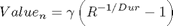
with,
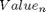 : The spread for the worst rated bond we desire, with an assumed recovery rate of 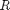 and an assumed default duration, 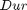. The index , 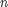, denotes that this is the th worst rated bond out of our bond ratings.
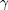 : Constant used to convert the spread value into basis points.
: Recovery rate; the assumed proportion of the notional/principal value of the bond received in the event of a default.
: Default duration; assumed duration of the bond at default.
To find the spreads for the ratings between the last rating that we have data for (the 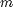 th worst rating) and the calculated worst rating, we assume a constant rate of increase in the spread as we move down ratings. So, the sub investment grade ratings are found using the interation relation:
For 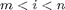,
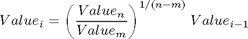
with,
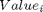 : Value of the 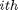 worst bond rating spread.
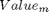 : Value of the lowest bond rating spread that data is available for.
: Value of the lowest rated bond spread that is valued here.
%MATLAB CODE %%%%%%%%%%%%%%%%%%%%%%%%%%%%%%%%%%%%%%%%%%%%%%%%%%%%%%%%%%%%%%%%%%%%%%%%%%% % Other Methods function results = bs(obj, DataSeriesIn, ParametersIn) obj.InvestmentGrade = DataSeriesIn; obj.subIGratings = ParametersIn{1}; obj.IndexValue = ParametersIn{2}; obj.RecoveryRate = ParametersIn{3}; obj.Duration = ParametersIn{4}; % interpolation D = str2num(obj.IndexValue)*(1/str2num(obj.RecoveryRate)^... (1/str2num(obj.Duration))-1); num_subIG = size(strfind(obj.subIGratings,','),2)+1; LastIG_pos = find(obj.InvestmentGrade.values{1}>0,1,'last'); delta = (D/obj.InvestmentGrade.values{1}(LastIG_pos))^... (1/num_subIG); subIG(1) = obj.InvestmentGrade.values{1}(LastIG_pos)*delta; for i = 2:num_subIG subIG(i) = subIG(i-1)*delta; end results = obj.InvestmentGrade; results.values{1}(1:LastIG_pos) =... obj.InvestmentGrade.values{1}(1:LastIG_pos); results.values{1}(LastIG_pos+1:num_subIG+4) = subIG(1:num_subIG); end
end
end